Tronmark 投资.持有.赚取💹 🗣️推荐和奖励 您只需 1️⃣0️⃣0️⃣ 个 TRX 和 Limitless 即可作为社区合作伙伴参与。 🔰奖励类型🔰 1️⃣ 社区支持奖励1-3% ✅ 00-20 天 》1%
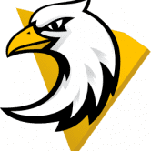 Tronsweep TRONSWEEP 是少数使用区块链技术的现实应用之一，TRONSWEEP 是基于 TRON 区块链的创新去中心化彩票 DAPP，由智能合约管理，无需任何人工干预。 在这个真
TRON|Powr Uniqueinvestment 智能合约不会因为基于合约余额的 POWR 价格和智能限制而干涸。TRON是一个雄心勃勃的项目，致力于为真正去中心化的互联网构建基础设施。TRON协议
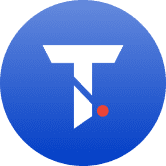 Trust Domains Trust Domains 是基于区块链技术的分布式域服务。这些域是符合 ERC721 的令牌。我们致力于打造跨链Web3.0金融基础设施。 信任域是符合 ERC721 的不可替代令牌。因此域是
TrustRoll Trustroll 是一个基于币安智能链区块链，由智能合约控制的去中心化游戏平台。 Trustroll 以完全自动化和确定性的方式工作，保证公平的结果。 我们可以公开访问。 任何人都
TT Windmill TT Windmill 是一款基于 Thundercore 区块链的中世纪游戏。 您可以收获小麦，然后在风车中生产 TT，初始每日回报率为 10%。 游戏的原则是通过在适当的时间再投资小麦（价
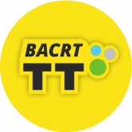 TT-BACCARAT TT-Baccarat 是基于 ThunderCore 协议构建的 Dapp。 Gambling Tt baccarat StableFund - 使用我们的 AI 交易机器人赚取 1.5% 的奖励 - 立即投注！ Tt 百家乐 # … 一般情况 # … 在赌博中 # … 在 ThunderCore 🔞 - 您必须年满
TT-KENO TT-Keno 是一款基于区块链 (Dapp) 的游戏，部署在 ThunderCore 协议上 智能合约地址 0x05aA637D1364beF25d1C89735ded26dae2FCA80D TT-Keno 是一款部署在 ThunderCore 协议上的基于区块链 (Dapp) 的游戏 🔞 - 您必须年满 18 岁并且居住在可以合法投注该
TT-POKER 在 Thundercore 区块链上享受经典的视频扑克 TT Poker 的真实赌场体验让您可以像职业选手一样在 WPT 决赛桌玩！参加激动人心的扑克锦标赛、加注、全押或弃牌——就像在拉斯
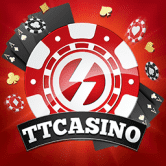 TTCasino TTCasino 是 Thunder Core 网络的领先加密赌场，拥有来自世界知名游戏提供商的 3,000 多款游戏，拥有多年经验并获得全面认证。 它还提供体育书籍甚至 PvP 扑克，用户可以在其中创
Tteok Thug 是 Klaytn 区块链上的第一个 meme 硬币。 您需要 Kaikas 钱包才能购买 Thug Tteok（韩语：떡）是一种韩国年糕，由各种谷物制成的蒸面粉制成，[1] 包括糯米或非糯米
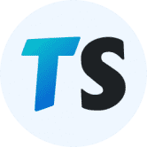 TTSwap TTSwap 是基于 Uniswap 和 Vitalik 的想法启发的自动做市（AMM）模型的去中心化交易所（DEX），由第三方开发者构建。 这种 AMM 模型的最大特点是流动性池是完全自动化的
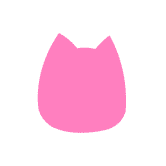 Tubby cats by tubby collective 每只大猫不是完全随机生成集合，而是从 120 个不同主题调色板中的一个创建。 大猫在生成时并没有考虑到个体特征的稀有性。 rarity 基于主题生成调色板。 该系列还
TuringMachine TuringMachine 协议：Turing Swap - 稳定币的去中心化交易所、Turing Farms - Yield Aggregator、Turing No-loss - 无损失奖品游戏等。 图灵机。 图灵机是图
Tutti Frutti Tutti Frutti Finance 或 TFF 将是第一个基于币安智能链的低通胀、完全社区分布式的收益农业项目，保证奖励期超过 3 年！ Tutti Frutti Finance 是第一个基于币安智能链的低通胀、社区分布
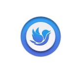 TweetN Dashboard TweetN 是一个 Defi 协议，旨在结合两大行业：广告和区块链。 用户可以通过发布推文来赚钱。 在我们的 Dapp 上使用我们的键盘 NFT 赚取 $TweetN。 TweetN Dashboard — 一种 Defi 协议
Typhoon Network 关于台风 Typhoon 允许您在 2 个币安智能链 (BSC) 钱包之间发送安全、私密的交易。 它通过成为中间人来做到这一点：你将一些 BNB 存入合约并收到安全票据作为回报。 谁知
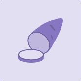 Ubeswap Ubeswap 的使命是通过让用户更便宜、更容易地交换、耕种和访问链上新的金融市场来提高 DeFi 的采用率和流动性。 Ubeswap 是 Celo 资产的去中心化交易所和自动化做市商协议。
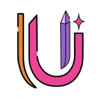 UBU Finance UBU Finance (Universal Binance Union) - 是一个将最先进的 DEFI 应用程序与特殊功能相结合的平台，例如通货紧缩、利益共享……它是完全去中心化的。 我们的目标是建立全球金融合作伙伴
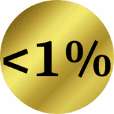 Under1 Casino Under1.casino 低于 1% 的房屋优势！ 当房子保持较少时，您会赢得更多！ 将这些赔率与任何其他 Dapp 或任何赌场游戏进行比较！ 具有 x2、x10 和 x100 游戏。 每次下注都有可能
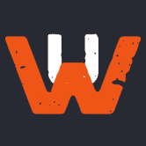 Underground Warriors Underground Warriors 是一款在 Lamden 的区块链上开发的赚钱的格斗游戏，您的角色在地下为金钱和名誉而战。 每获得一次胜利，您都会获得 $WP 代币（勇士积分）的奖励。 Underground Warriors 中的每
Undra Undra 背后的团队（称为 Studio Decent）致力于一个单一的目标：重新构想 Web3 技术以应用于主流游戏。 Undra 是我们游戏的名称。它也是一个虚构的场景，一个 1898 年新
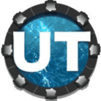 Unfamiliar Territory Founder Series The Well是Unfamiliar Territory世界的中心。 每个 Well NFT 都会解锁游戏中的 Well *，并通过与 Hydrating Humanity 的合作资助在东非建造一口真正的水井。
Ungrund ungrund 是一个旨在发展替代媒体经济的协议 Ungrund：德语术语，意思是毫无根据的； 由德国神秘主义者 Jakob Boehme (1575-1624) 引入，指的是深渊，也就是上帝，位于世界背
Unirex Finance Unirex Finance 是一个去中心化的农场收益项目，在 Fantom Chain、Polygon（很快）和 BSC（很快）上运行。 Unirex Finance 将提供以下服务： Yield Farm：通过质押流动
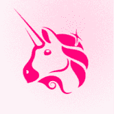 Uniswap V1 Uniswap 是一种在以太坊上进行自动令牌交换的协议。 Uniswap 协议在设计时考虑到了简单性，为在以太坊上无缝交换 ERC20 代币提供了一个接口。通过消除不必要的租金提取和
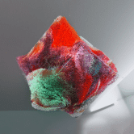 Unseen Universe 受先进技术启发，为每个人创造更美好的未来：OMR 和 Audi 正在为 UN Refugee Aid Germany 筹集资金，其中 NFT 来自 Studio OUCHHH 的 Eylul Alici 和 Ferdi Alici 的 AI 雕塑。步的数据。 OMR 博览会上的无数真
Unstoppable Domains CNS 或 UNS 区块链域。使用它来解析您的加密货币地址和去中心化网站。对于那些构建🏗和那些相信的人。💫 成为 Coinbase NFT 下一个伟大创意社区的一员。Unstopp
Uranium Finance 通过 Uranium Financial Auto-Staking Protocol（简称 URFP），我们将带领 Uranium 引领 DeFi 3.0 的一场革命。 Uranium 使 Staking 变得更容易、更高效，并为 $URF 代币持有者提供了加密货币中最强劲
USD STAKE 最稳定和盈利的收益。在 5 - 14 天内每天赚取 15% - 25% 的农业 DApp，即在 SHIBA、BNB、BUSD、USDT 和 CAKE 质押池的投资总回报率为 125% - 210
Uswap NFT marketplace Uswap NFT 市场被设计为一个去中心化的公共市场，可以简单地在 TRON 上铸造、交易和收集 NFT。 UNM 允许艺术家铸造 NFT 的新作品并进行出售/拍卖。 拥有 Tpunks
uwucrew uwucrew 是由动漫和流行文化启发的 9670 个化身的生成集合，旨在兼具包容性和表现力。每个 uwucrew NFT 都是完全独特的，具有多达 9 个特征和 120 多种资产。 uwucrew 的一个有趣特性
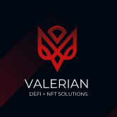 ValerianProtocol Valerian 是一个基于 DEFI + Ticket System 的高收益项目，除了常规的 Defi 解决方案外，它还有多个用例，缬草 - 金尖叫 NFTS ♦️ 仅 700 总 Scream 供应的 2%，您将成为幸运者之一？！🤯 从已
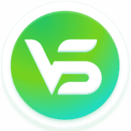 ValleySwap ValleySwap 是 Oasis Emerald paratime 上最大、增长最快的去中心化交易所，包括流动性农业、掉期和 IFO 等功能。 Valleyswap 遵循非托管、点对点、自动化做市商模式。我们的目标是提供快速、安